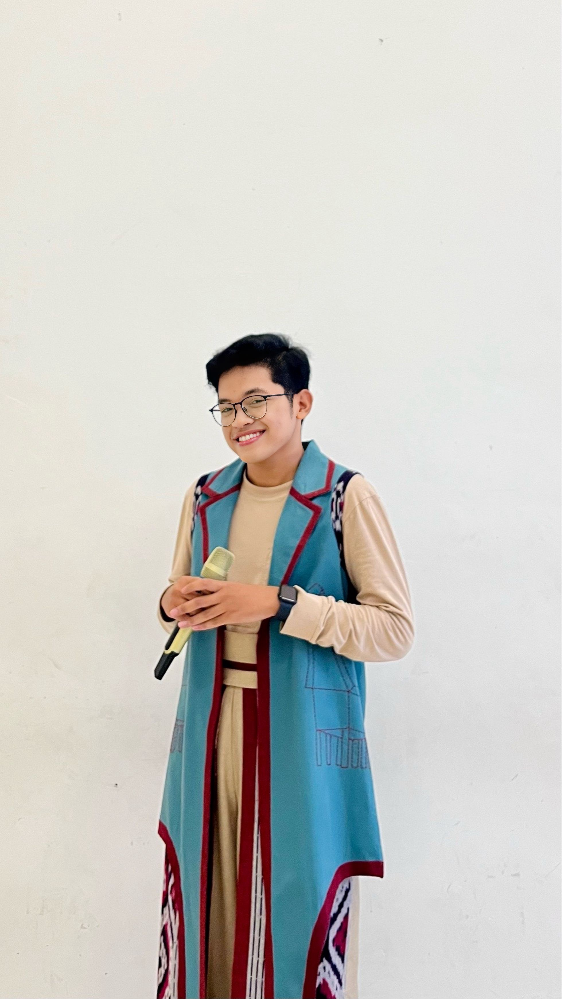
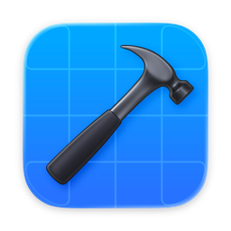

Content Creator Intern
Digimarly
Jan – Jul 2025Surabaya, Indonesia
Welcome to my personal website. Version 1.0, I guess? After years of squeezing everything into PDF portfolios, I figured it was time for an upgrade.
By day, I'm an aspiring Product Manager. By night, a curious tinkerer, occasional designer, and someone who thinks building things from scratch sounds like fun.
My journey has taken me from leading teams and managing projects to designing digital experiences and figuring out what makes people tick. Somewhere along the way, I realized I'm more fascinated by why we build something than simply how we build it. That's what drew me toward Product Management. I enjoy connecting the dots between people's needs, business opportunities, and technical possibilities. But beyond products, I'm a people person at heart. Good conversations, fresh perspectives, and bringing people together are my kind of thing.
This website is my latest experiment. Built with curiosity, powered by GPT-6 and Gemini Argon, and held together by a questionable number of prompts. The result is a bento box of my favourite Apple apps, shrunk down into widgets. Part professional journey, part personal playground, and part excuse to keep experimenting with whatever technology catches my attention.
Have a look around. Everything's a work in progress. Including me.

Upcoming
17
1-on-1 calls

Projects

Ikzaaz
Nongsa, Batam
Junior Developer @Apple Developer Academy